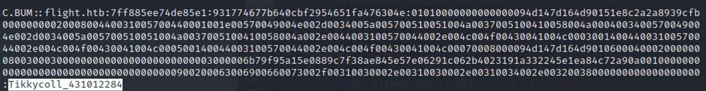
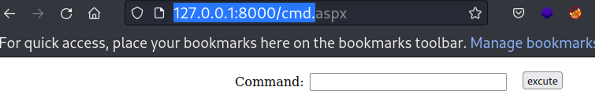

April 2, 2023
Flight
Tools Needed: Responder, Gobuster, SMBClient, Juicy Potato, RunasCs, Impacket and P0wny-Shell
Step 1: Start off with an Nmap Scan
nmap -sV -sC <IP ADDRESS> -oA <FILE NAME>
Start off with an nmap scan:
Let’s check out this website while our scans go off. We’ll want to do a directory scan as well as a subdomain scan.
We find school.flight.htb here as a subdomain
gobuster vhost -u http://flight.htb/ -w /usr/share/wordlists/seclists/Discovery/DNS/subdomains-top1million-5000.txt --append-domain
In our directory scan we don’t find a lot of useful things.
gobuster dir -u http://flight.htb/ -w /usr/share/wordlists/dirbuster/directory-list-2.3-medium.txt
Once we add school.flight.htb to our etc hosts file we can start scanning that as well.
If you go to the “About Us” page we can see that there’s a potential LFI.
There was potential but it looks like there’s a block on this.
However, if we open responder on our htb vpn interface.
When we replace the LFI with “//<IP>/test” you’ll get a hit on responder for the user svc_apache
We can take the hash and throw it into hashcat to get some credentials.
So we try to get into some SMB shares, without much luck.
We can try using crackmapexec to get us a list of usernames here.
Take out all the usernames from this list (O.Possum,svc_apache ...etc) and put it into a users.txt file Now run crackmapexec with users.txt and the password, we can check if any other users have the same password.
Using impacket we can find that Shared is writable.
So, let’s go check what is up with shared. https://book.hacktricks.xyz/windows-hardening/ntlm/places-to-steal-ntlm-creds If you create your own “desktop.ini” according to this page, you’ll be able to grab another NTLM hash.
Once connected to the smb share simply “put desktop.ini” After a few moments you’ll get another NTLM hash in you responder.

Let’s crack that hash again
Tikkycoll_431012284
Let’s get in as c.bum and see what we can do.
c.bum can write to flight.htb, so we can start uploading content directly to the website. These files get deleted pretty quickly, so it was handy to keep open a terminal with the smbclient connected to upload files when they got deleted before I had a chance to pivot.
I tried uploading the regular php reverse shell from pentestmonkey and it didn’t work, but I found this p0wnyshell on github and tried uploading it. After you put it from smbclient you can go to the browser to get an interactive webpage that gives you a shell. Because the files here get deleted so often, if you upload them with smbclient, you can move them to a more “stable” directory. I created C:\tmp to work from so that I could easily access the tools I wanted to use.
https://www.revshells.com/ PowerShell #2 You’ll need multiple terminals here, so send yourself a few connections.
We can get in the machine as svc_apache
Let’s check out some networking information. This is the shell I used to forward their traffic back to my machine with Chisel.
We can forward some of this traffic with Chisel. The chisel server gets a connection and we’re able to browse the website.
Navigate to 127.0.0.1:8000 to see the flight page. This is different than the flight.htb page we saw when we first connected.
We can notice this page is made with asp .NET
We can’t do too much more as svc_apache, so we need to connect in as c.bum for now. Bring over RunasCs.exe https://github.com/antonioCoco/RunasCs to get a shell as c.bum.
You can get your user flag now!
Something that Svc_apache could not do was write to the c:\inetpub\development As c.bum we’re able to upload cmd.aspx to that directory, which lets us run commands on ASP.NET (What we found the web page was built with Wappalyzer)
Now if you visit the webpage at 127.0.0.1:8000/cmd.aspx we’re greeted with a command prompt. This file will be deleted quickly so you need to have a payload ready to go. I used the PowerShell #2 from revshells.com again here to get another reverse shell.
Once you execute your shell should catch
After some enumeration of the machine and your privileges this seems like a valid target for JuicyPotato You can grab JuicyPotato here: https://github.com/antonioCoco/JuicyPotatoNG/releases/tag/v1.1 I uploaded it with smbclient and moved it to my C:\tmp directory. As well as nc.exe.
Go back to one of your shells as c.bum and grant these permissions to these two files.
Now go back in as iis
Now we have JuicyPotato in place as well as nc. This should return to us a reverse shell as root (NT authority\system on windows)
And it works!
Get the root flag
Success! Flight has been pwned üòé